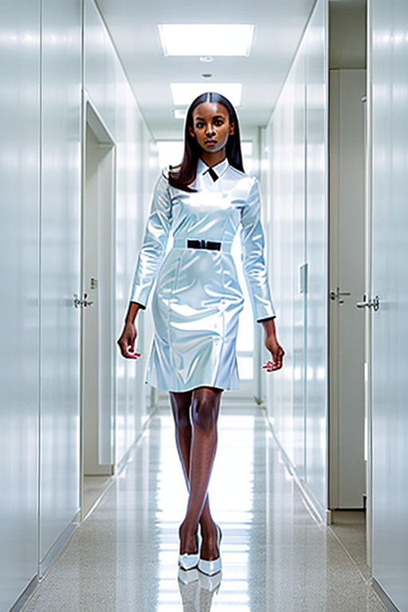
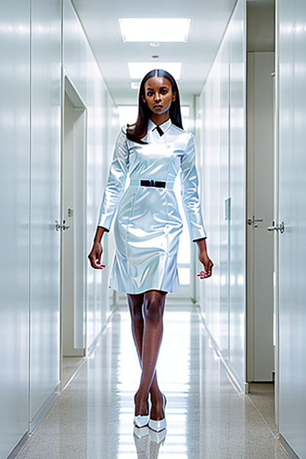
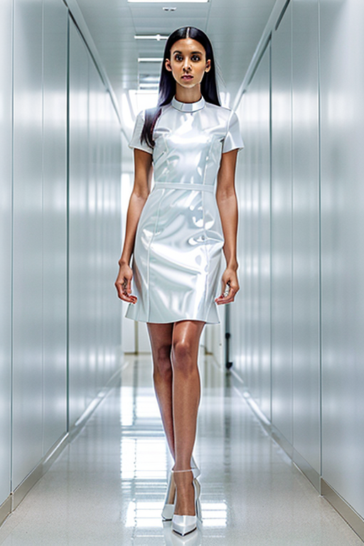
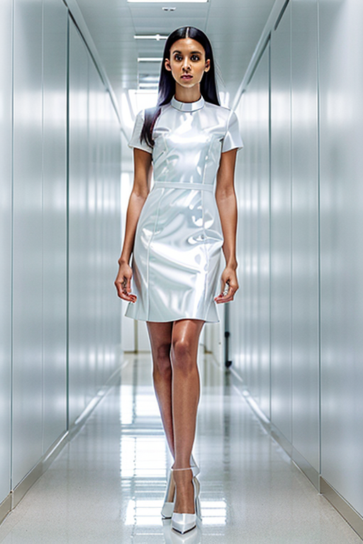
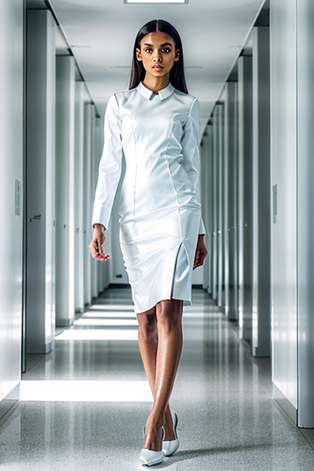
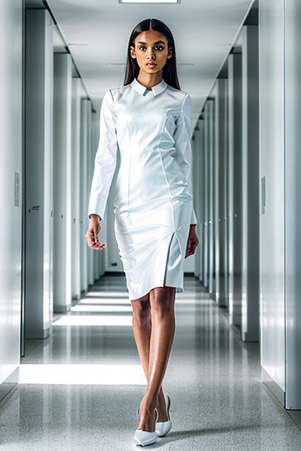

This set explores uniform girl tucked in through urban aesthetics and bold tone under window light. Compositions use rule-of-thirds with urban backdrop, keeping focus clear and tidy. Details like sporty styling and balanced colors make browsing easy.
Browse uniform images. Page 4 of curated uniform-style portrait collection.

 



 


 



This page explores page4 with a practical focus on visual detail and browsing experience. Alt text and headings are optimized to make the content accessible and to provide consistent cues across the site. Subtle differences in wording help avoid duplication across similar pages. If you are comparing alternatives, keep an eye on subtle differences in framing, contrast, and color balance. Internal navigation leads to related items with comparable tone or composition. This reduces bounce and supports exploration within the same theme. Alt text and headings are optimized to make the content accessible and to provide consistent cues across the site. Subtle differences in wording help avoid duplication across similar pages. The image aims to deliver a straightforward visual impression while keeping the file lightweight. A brief explanation clarifies the subject and lighting so visitors can quickly decide where to go next.